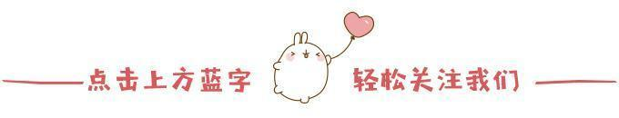
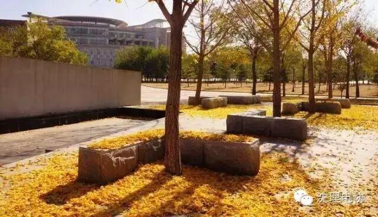
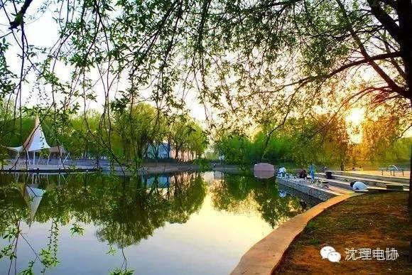
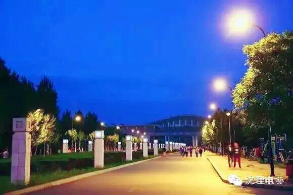
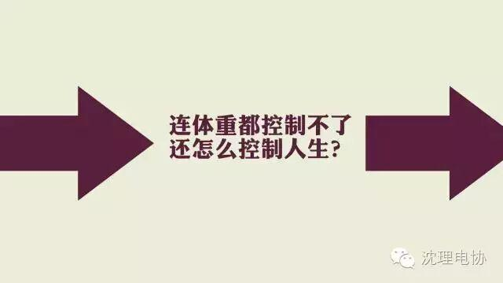

使用小程序

不知你还记不记得
自己曾意气风发地说出大学梦想
“我要拿国家奖学金！”
“我要当学生会主席！”
“我要创业！”
“我要出国留学！”
......
可是，后来呢
你是否保持着初心呢？
在大学里，
你最不想变成哪种人？
看起来忙忙碌碌，实质上碌碌无为。
偶发踌躇满志，长期无所事事。
打扰室友休息，挑拨寝室关系。
不想变得心机重，不想变成大胖子。
加入志愿者团队也好，加入社团也好，做学生工作也好，或者一心学习也好。 大学自由的风气是培养一技之长的最佳土壤，不管是人际能力，还是PPT、AI、PS、AU之类的技能，或者是做事的专注度，就算只是字写得好也算。有些人，四年下来，除了脂肪和年龄以外，没有任何增长，然后转发关于大学的鸡汤文感慨多迷茫多慌张竞争多大。 明明只要多付出一点努力就可以改变现状，但也仅仅是转发完以后又继续刷淘宝刷微博刷韩剧。这样度过人生的黄金年代，是一种巨大的浪费。 |

最不想成为天天混吃等死的人。
现在每天看看书，和朋友聊聊天，再做点感兴趣的运动，感觉过得很充实。周末出去吃点美食，看场电影，简直不能更美好。对我来说，大学一定要充实自己，锻炼社交能力。 |
有时间提高自己，不要总针对别人。
最不想成为那种进了学生会就打官腔，
做了点小事还自以为自己有多辛苦这种人。
最不想成为决定的事无法坚持的人。决定要做跑步
减肥却一直以累为借口，决定要每天背英语却以累为
借口，决定要每天都学一点新编程语言却以累为借口。

在大学最不想成为的，大概就是这样的人。
总会以不喜欢自己的专业为借口，干一些所谓感兴趣的事情。
挂科，作弊，专业课成绩低，学术水平为零。
英语四级都不过，自学坚持不下来。
这种人就该淘汰。
不要让自己后悔，可以在剩下的大学时光里，好好努力。 既来之，则安之。你可以不喜欢这所大学，不喜欢这种环境，不喜欢你的专业课。可是，一定要明白，喜欢什么，愿意为喜欢的事情付出多少...... |
学习学不过别人，玩游戏也玩不过别人的人。

不能自制者，虚度光阴者，
即时行乐者，茫然无措者。
自己没本事，整天怨社会。
不会拒绝其他人，无法做自己喜欢的事情的人。
间歇性雄心壮志，持续性萎靡不振；
幻想国的国王，现实城的乞丐；
什么都想要，什么也得不到；
见不得别人好，麻木于自己的糟。
不希望成为混了四年什么都没学到。
抱怨学校不好、身边的人不好之类的人。
整天把改变挂在嘴边，却不付诸于行动的人。
整天呆在宿舍只会LOL的人。
整天只想当个书呆子没有欲望向往更大世界的人。
整天嚷嚷着跑步健身，却因为各种借口放弃的人。
最不想成为一个对什么都冷漠的成年人。
失去了对一切热情的同时，还冷眼嘲笑别人的热情，总觉得看谁谁幼稚做啥啥无趣，总是秉持事不关己高高挂起的态度。 |
第一，学不起来的人。
第二，玩不起来的人。
第三，恋不起来的人。
第四，独不起来的人。
第五，以上四个都可以的人（四不像）。
最后一种：

我们可以平凡
但请不要放纵自己
让自己一步一步走向平庸